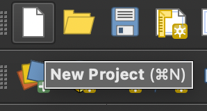
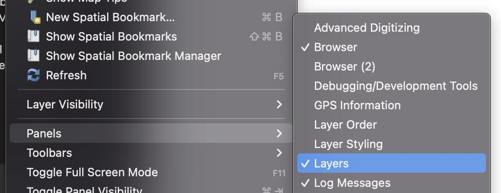
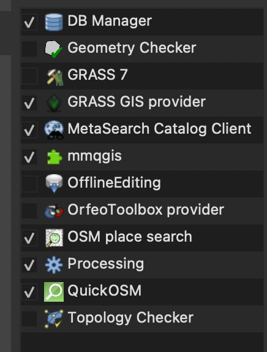
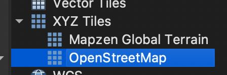
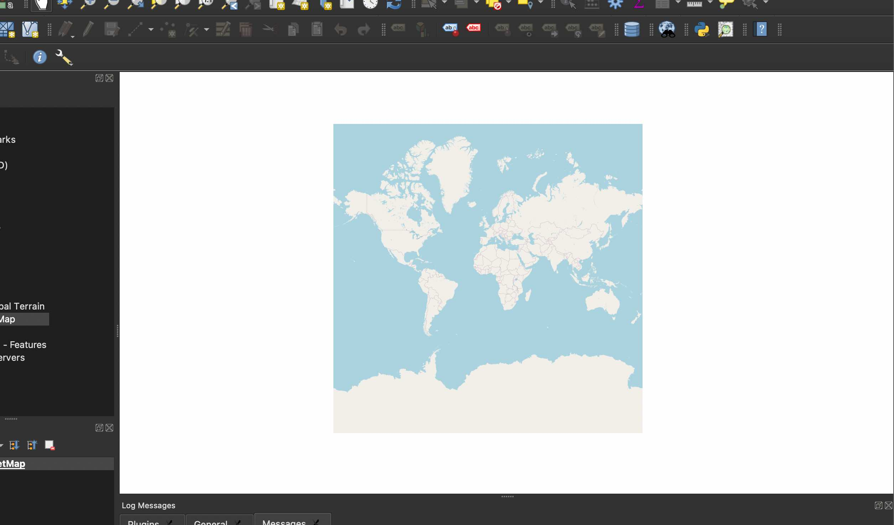

-
create a new project

-
Under View > Panels > Layers, make sure the Layers panel is turned on.

-
Under Plugins > Manage and Install Plugins make sure mmqgis, OSM place search, and QuickOSM are installed

-
Under the Browser panel, expand XYZ Tiles and double click OpenStreetMap. This should add a map of the world to the project.

